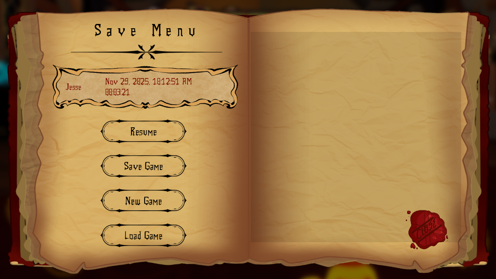
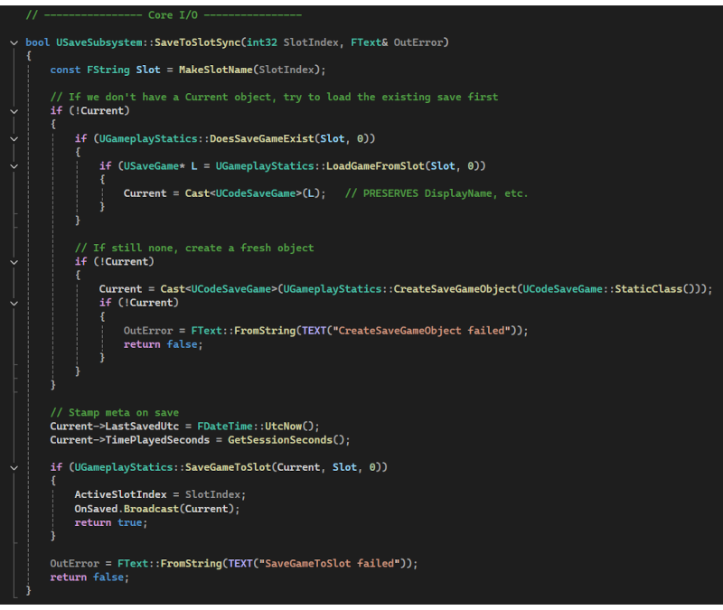
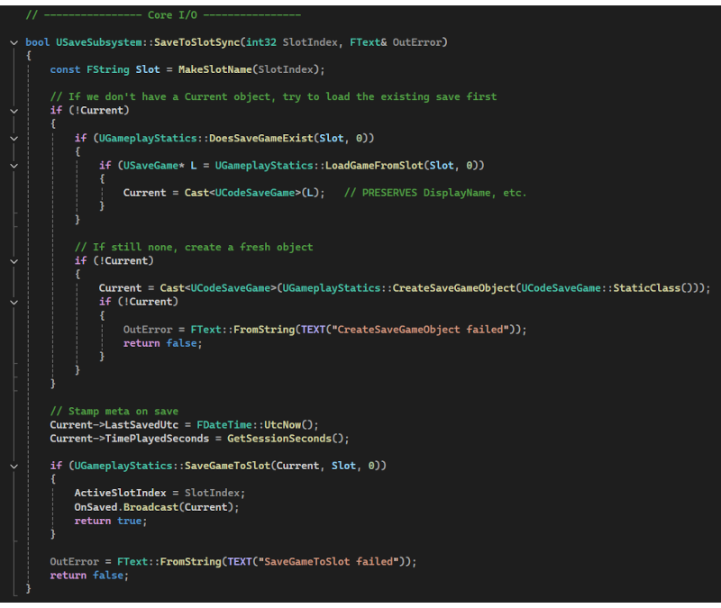

Save & Load System — Unreal Engine 5 (C++)
A scalable, slot-based save system built entirely in C++ for Unreal Engine 5. Designed with performance, extensibility, and UI clarity in mind—supporting metadata, world persistence, and cross-session restoration.
Project Overview
This project replaces Blueprint-based persistence with a professional-grade C++ system. The save architecture was designed like a production feature — modular systems, clean APIs, and complete UI separation from backend logic.
- Unreal Engine 5
- C++
- UI Architecture
- Serialization
- Persistence
- UX Design
Design Goals
- Professional-feeling save UI
- Slot naming, overwriting, and deletion
- Persistent world data across sessions
- Metadata visibility and clarity
- Scalable backend architecture
- Full C++ implementation

System Architecture
The save system is built using clean separation of responsibility across three layers:
- UI Layer — Slot widgets and input
- Manager Layer — Central Save Manager
- Data Layer — Custom SaveGame class
 

This isolation ensures safe updates to UI without risking data loss or logic errors.
Slot System & Metadata
Each save slot includes more than raw data — it contains presentation-friendly information:
- Custom slot names
- Timestamps
- Level names
- Playtime
- World transform


C++ Highlight
All saving and loading is controlled through the Save Manager class:
// Save Trigger
UGameplayStatics::SaveGameToSlot(CurrentSave, SlotName, 0);
// Load Trigger
UGameplayStatics::LoadGameFromSlot(SlotName, 0);
- Custom USaveGame class
- Slot auto-detection
- Load validation
- Error-safe routines
UI / UX Design
- Readable typography
- High-contrast cards
- Selection feedback
- Delete confirmations
- Controller support


Why C++?

- Lower overhead
- Stronger debugging tools
- Scalability
- Cleaner UI binding
- Robust architecture
What I Learned

- Persistence is architecture, not just storage
- UX matters even in backend systems
- Clean separation prevents messy refactors
- Visual clarity builds trust
Future Improvements

- Cloud saves
- Profiles
- Screenshot thumbnails
- Compression
- Threading